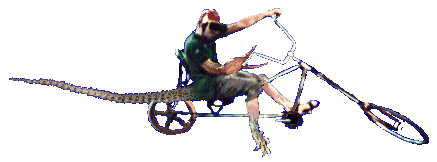
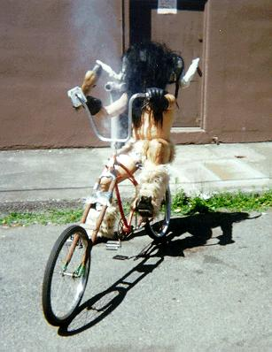
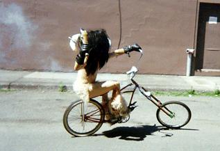
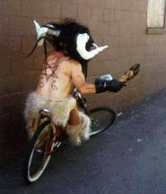
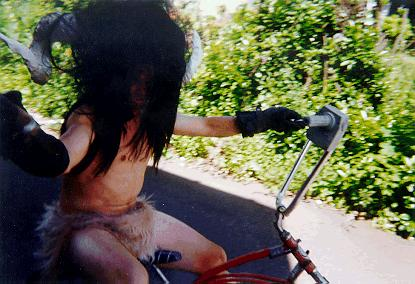

{kind=link}


Many feel that devolution is a tragic but unavoidable consequence of riding a Chunkcycle. Not so! Devolution is the very reason for riding these things!

Klöven Hööf, the möst highly devölved of all of Chunk.
After the imminent Apocalypse, nothing will be the same. As has been noted, the laws of physics will be radically different than they are at the moment. Today, our bicycles seem to be good for nothing other than fucking shit up and getting dates. Tomorrow, they will be a joy to ride! Pedaling uphill will feel like pedaling downhill, and pedaling downhill will feel like soaking in a vat of warm olive oil. Today, our bicycles are dangerous to ride and prone to falling apart. Tomorrow, they will be unsinkable, while other bicycles will spontaneously explode.
The situation for human beings will be similar. The world is rife with smug homo sapiens who feel that they are the pinnacle of evolution. We have news for these people. After the coming Apocalypse, evolution will be turned on its ass! Those who have expended so much time and energy on evolving will become as helpless babies! It is those who have devolved who will again be at the top of the food chain.
 
This, gentle reader, is the true reason for Chunking. Many wonder why we do the things that we do. They think that after the coming Apocalypse, they will be able to just jump on a chunkcycle and take a crash course in piloting it. They will find this impossible. Their backs will lack the required hunch. Their hairless tongues will be unsuited for wiping fallout particles from the wheels. When their mounts seize up and refuse to move, they will wish that they could exude a lubricating mucus like we can!
This is why we live with the horrid effects of riding our steeds. In fact, these effects are themselves nothing other than the early stages of devolution. Ever notice how the Chunklings who complain the most about hunchback will happily knuckle-walk down the street? Neither is it a coincidence that those who are hit the worst by "chopper crotch" lose all interest in the shuffling and grunting associated with human mating activities. They have discovered asexual reproduction!

One doesn't have to be interested in post-Apocalyptic living to devolve. Devolution is fun. Swinging from the trees and chest-slapping is fun. Orang-utangs can unscrew machine-tightened bolts with their bare fingers! Slithering through the muck is a blast. Grunting and hooting feels great. Give it a try!
(Return to C.H.U.N.K. technical documentation.)
| Copyright 2003 Megulon Five <megulon5@dclxvi.org>. |
|
This work is licensed under a Creative Commons License. | Last modified 12 September 1997. |